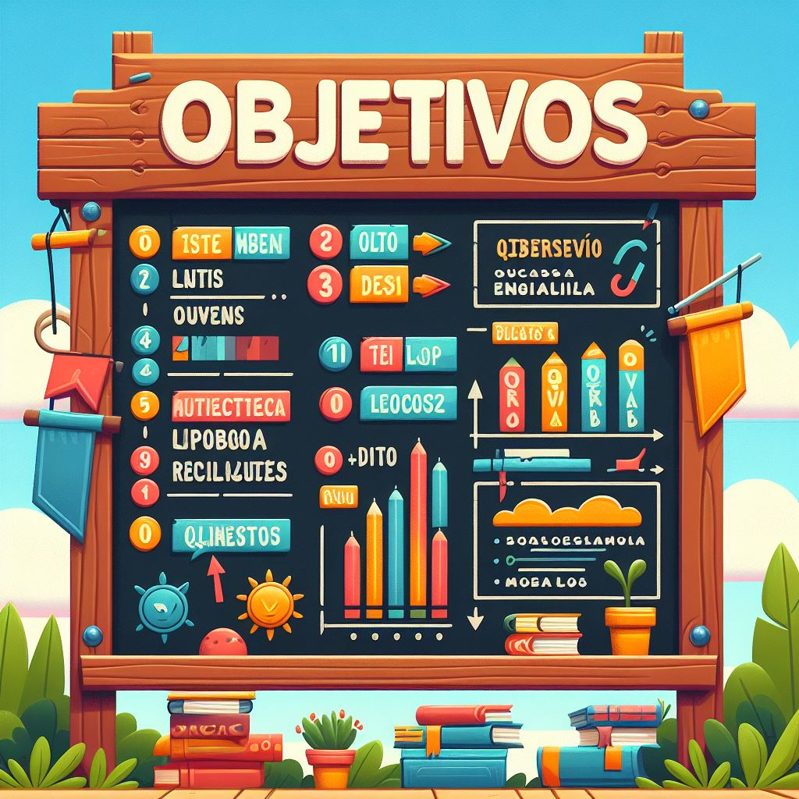
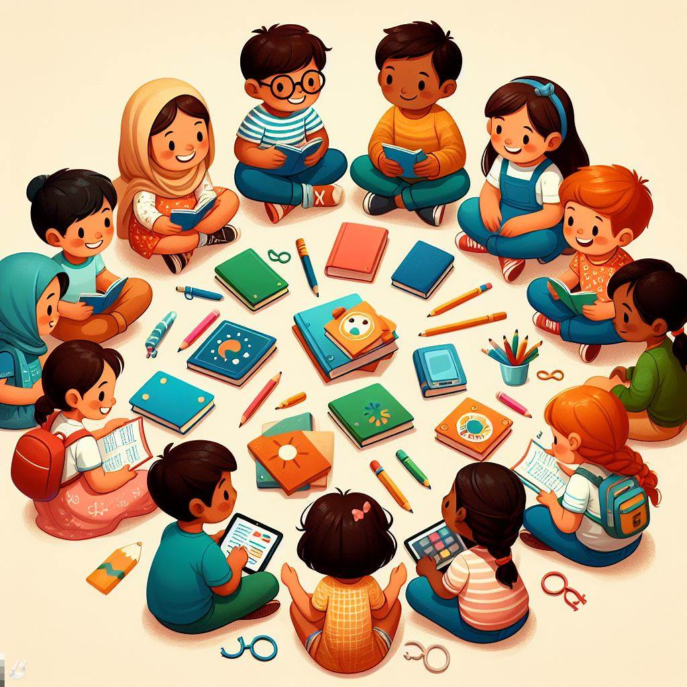

Para crear un Recurso Educativo se debe tener presente los siguientes paso a seguir:
Identifica tus objetivos de aprendizaje
Antes de comenzar a crear tus materiales educativos, es importante que identifiques los objetivos de aprendizaje que deseas lograr. ¿Qué habilidades o conocimientos quieres que tus estudiantes adquieran?

Selecciona el formato adecuado
Una vez que hayas identificado tus objetivos de aprendizaje, es hora de seleccionar el formato adecuado para tus materiales educativos. ¿Quieres crear un video, una presentación, un juego, una actividad, un libro de texto, o algo más?
.jpeg)
Crea tu contenido
Ahora es el momento de crear tu contenido. Si estás creando un video, graba tu video. Si estás creando una presentación, crea tus diapositivas. Si estás creando un juego, diseña tus reglas y crea tus tableros. Si estás creando un libro de texto, escribe tu contenido.
Personaliza tus materiales
Una vez que hayas creado tu contenido, es hora de personalizar tus materiales educativos para satisfacer las necesidades específicas de tus estudiantes. ¿Necesitas adaptar tus materiales para estudiantes con discapacidades o necesidades especiales?
Comparte tus materiales
Finalmente, es hora de compartir tus materiales educativos con tus estudiantes. Puedes compartir tus materiales en línea a través de plataformas de aprendizaje en línea, o puedes imprimir tus materiales y distribuirlos en el aula.
